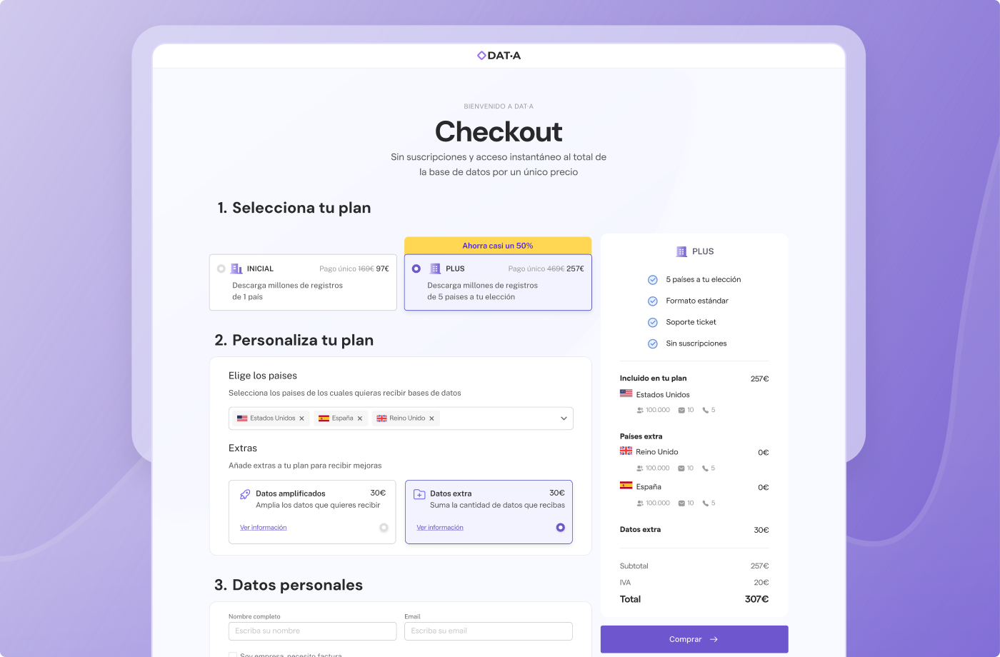
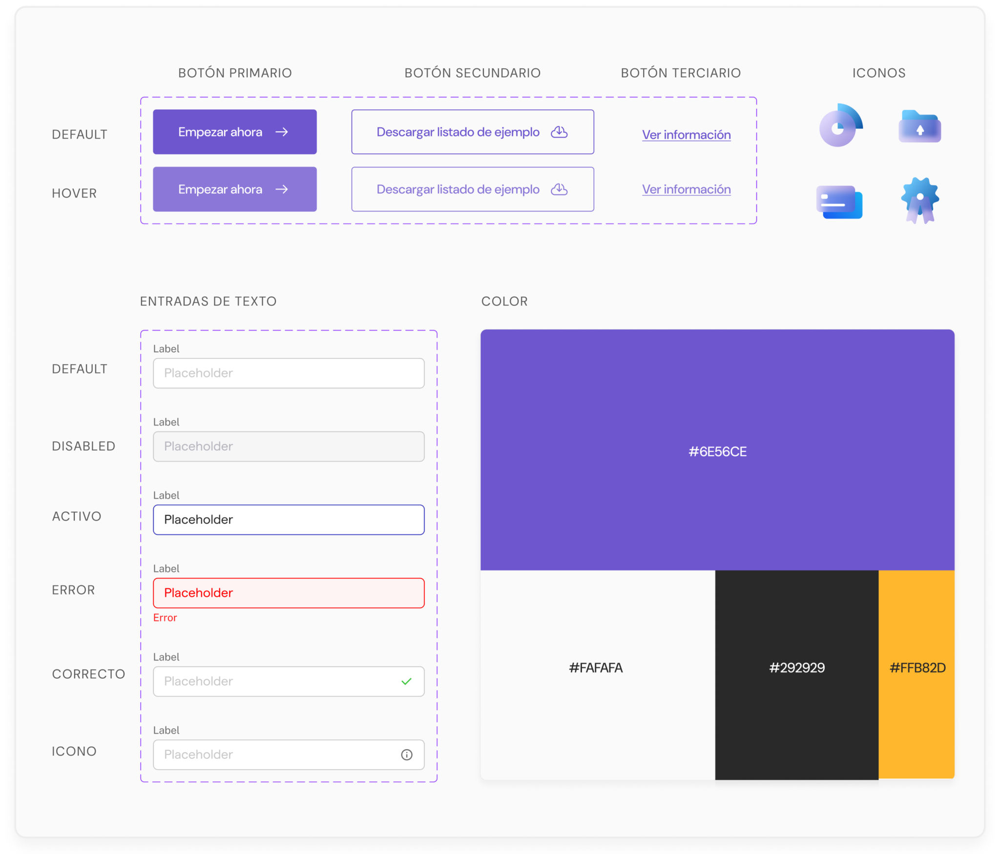
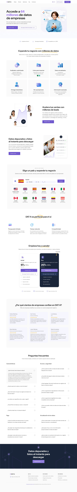
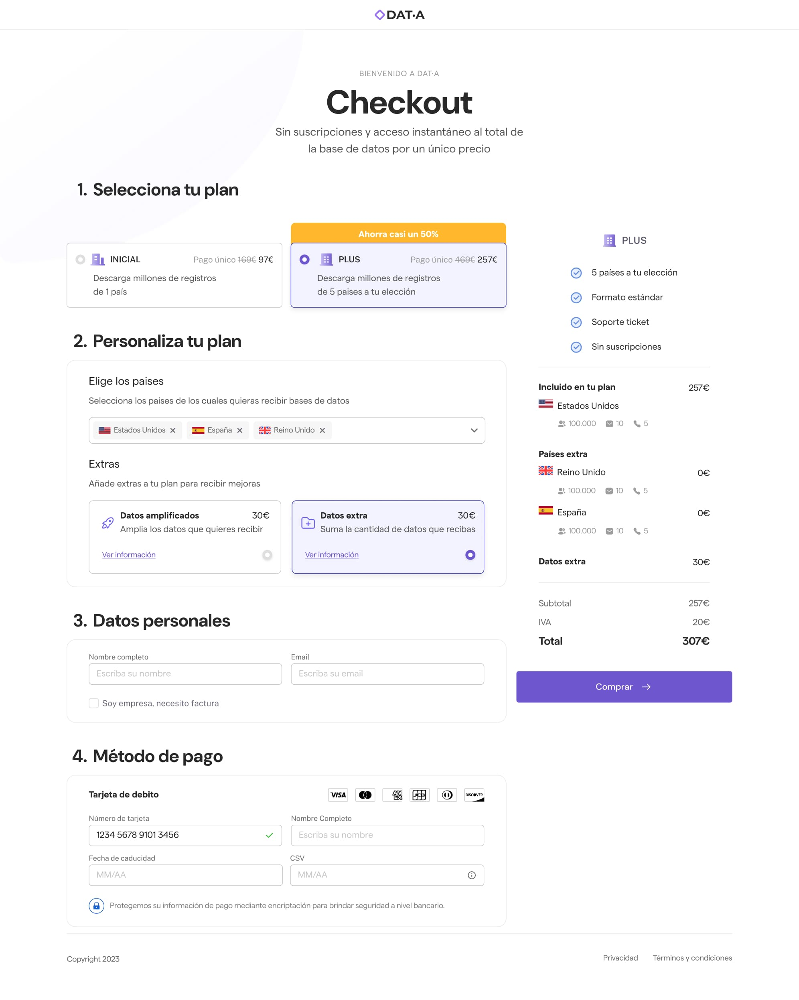

Diseñé una web y proceso de compra para una empresa de venta de datos, enfocándome en simplificar el acceso a productos complejos.
Creé una experiencia intuitiva y fluida, con una arquitectura clara y una interfaz visual profesional alineada con los objetivos del negocio.
Design System
Para asegurar coherencia visual y eficiencia en el diseño, desarrollé una guía de estilo y un design system básico. Este sistema define los principios clave de tipografía, color, componentes y espaciado, facilitando la escalabilidad y el trabajo colaborativo.

Diseño final
La primera fase del proyecto estuvo centrada en entender tanto las necesidades de usuario como las limitaciones internas de la plataforma.


Aprendizajes
Este proyecto presentaba el reto de hacer accesible una oferta técnica y compleja para todo tipo de usuario. Estas son algunas de las conclusiones y aprendizajes que surgieron durante el proceso de diseño:
Simplificar sin perder valor. Traducir conceptos técnicos en una propuesta clara fue clave para que los usuarios entendieran qué estaban comprando y cómo usarlo.
- Arquitectura de información clara. Reorganizar el contenido ayudó a que la navegación fuera fluida y que los usuarios encontraran lo que buscaban sin fricciones.
- Design system como base de consistencia. Crear una guía visual desde el inicio permitió mantener coherencia en todo el proyecto y facilitó futuras iteraciones.
- Diseño alineado al negocio. Cada decisión visual y funcional buscó no solo mejorar la experiencia, sino también apoyar los objetivos comerciales de la empresa.